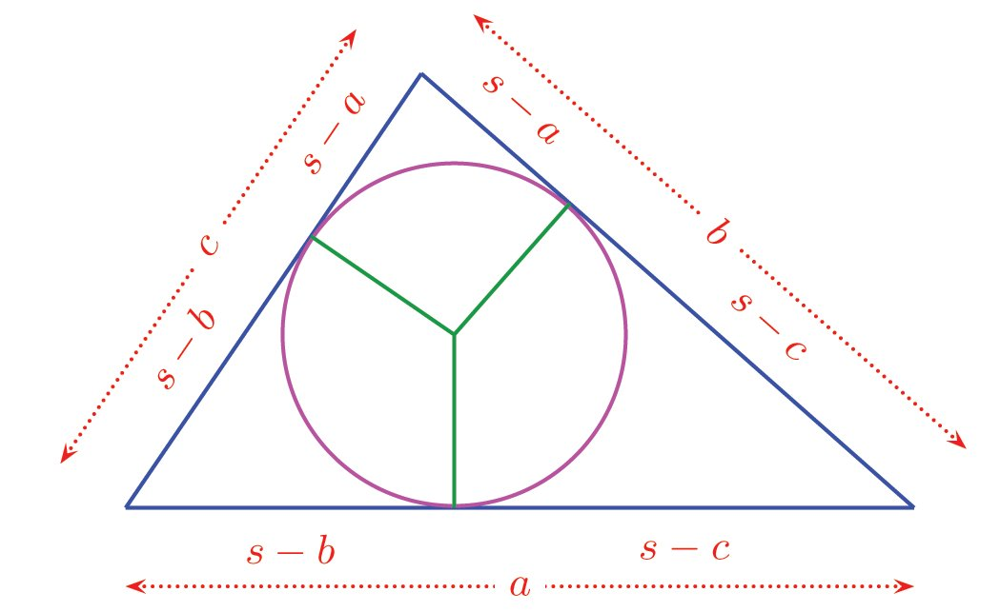
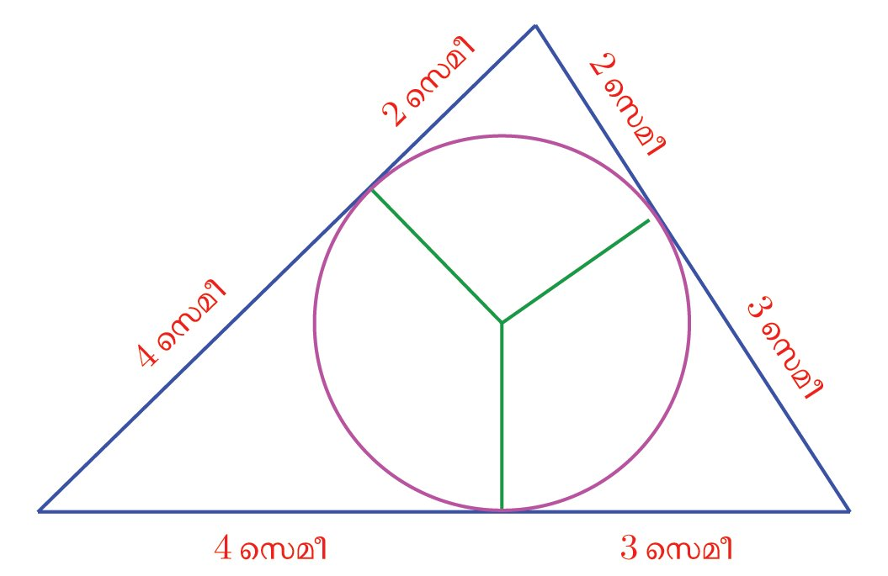
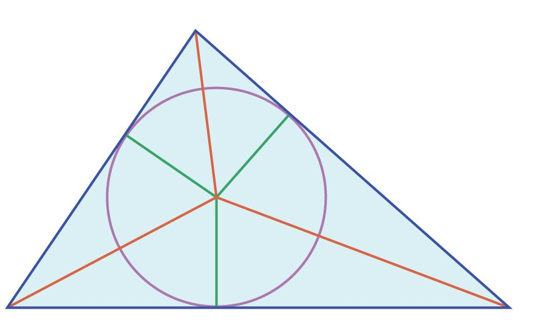

ഇതിൽ ജഅ ണ്മ ജആ = ജഇ ണ്മ ജഉ എന്നറിയാമല്ലോ.
താഴത്തെ വര, കറങ്ങി തൊടുവ-രയായാലോ?
ആ
ഇവ തമ്മിലുള്ള ബന്ധമ-റിയാൻ, അഇ, ആഇ യോജിപ്പിച്ച് ത്രികോണങ്ങളുണ്ടാക്കാം.
അ
ജ
എന്ന ഞാൺ, ജഇ എന്ന തൊടുവ-രയുമായി ഇ യിൽ ∠ജഇഅ
ഉണ്ടാക്കുന്നു. ഇത് വൃത്തത്തിന്റെ മറുഭാഗത്ത് അഇ ഉണ്ടാക്കുന്ന
∠അആഇ യ്ക്ക് തുല-്യമാണ-ല്ലോ.
ഇ
എന്നത് ജഇ തന്നെ- യ ആകും;
നേരത്തെ കണ്ട ബന്ധം
ജഅ ണ്മ ജആ = ജഇ എന്നാകും.
മുക- ള ഇ- ല ത്തെ വരയും തൊടു- വ ര
ആയാലോ?
അഇ
ജഉ
2
ഇ
അ
ജ
അതായ-ത്, ജഅഇ എന്ന ത്രികോണ-ത്തിൽ ഇ യിലെ കോൺ,
ഈ ബന്ധം ജഅ =
അഥവാ ത്രികോണം ജആഇ യിൽ ആ യിലെ കോണിന് തുല-്യമാണ്.
ജ യിൽ രണ്ട് ത്രികോണ-ത്തിനും ഒരേ കോണാണ്.
ജഅ = ജഇ എന്നാകും.
ഒരു ബിന്ദുവിൽനിന്നുള്ള തൊടുവ-ര- അതായ-ത്, ഈ ത്രികോണ-ങ്ങളിലെ കോണുക-ളെല്ലാം തുല-്യകൾക്ക് ഒരേ നീളമാണെന്ന് നേരത്തെ മാണ്. അതിനാൽ ഒരേ കോണുകൾക്കെതിരെയുള്ള വശങ്ങകണ്ടല്ലോ.
ളുടെ അംശബ-ന്ധവും തുല്യമാണ്.
ജഅഇ യിൽ ഃ കോണിന്റെ എതിർവശം ജഅ യും, ജആഇ യിൽ ഃ കോണിന്റെ
2
ഇ
ജഇ 2
ഈ
ഈ
എതിർവശം ജഇ യും ആണ്. ജഅഇ യിലെ ഏറ്റവും വലിയ വശം ജഇ യും ജആഇ
യിലെ ഏറ്റവും വലിയ വശം ജആ യും.
അപ്പോൾ
ജഅ ജഇ
=
ജഇ ജആ
മുറിക്കുന്ന വരയുടെയും വൃത്തത്തിനു പുറത്തുള്ള ഭാഗ- ത്ത ഇന്റെയും ഗുണ- ന - ഫ - ല ം,
തൊടുവ-രയുടെ വർഗത്തിനു തുല-്യമാണ്.
പരസ്പരം മുറിച്ചു കടക്കുന്ന ഞാണുക-ളിലെന്നപോലെ, ഇതും പരപ്പള-വുക-ളായി പറയാം.
മുറിക്കുന്ന വരയും വൃത്തത്തിന്റെ പുറത്തുള്ള
ഭാഗവും വശങ്ങളായ ചതുര-ത്തിനും, തൊടുവര
വശമായ സമച-തുര-ത്തിനും ഒരേ പരപ്പള-വാണ്.
(1)
ഒരു വൃത്തത്തിലെ പരസ്പരം ലംബമായ
രണ്ട് തൊടുവ-രക-ളും, മറ്റൊരു തൊടുവരയും ചേർന്ന് ഒരു ത്രികോ- ണ - മ ഉണ്ടാക്കിയ ചിത്രം നോക്കൂ.
ത്രികോണ-ത്തിന്റെ ചുറ്റള-വ്, വൃത്തത്തിന്റെ
വ്യാസ-ത്തിനു തുല-്യമാണെന്ന് തെളിയിക്കുക.
(2)
ഒരു വൃത്തത്തിലെ മൂന്ന് തൊടുവ-രകൾ ചേർന്ന ത്രികോണ-മാണ്
ചിത്രത്തിൽ കാണുന്നത്.
ഓരോ മൂലയിൽ നിന്നും തൊടുന്ന ബിന്ദു വരെയുള്ള തൊടുവരകളുടെ നീളം കണക്കാക്കുക.
ജിയോജിബ്രയിൽ ÿഒരു കോണും
അതിന്റെ സമഭാജിയും വരയ്ക്കുക.
സമഭാജിയിൽ ഒരു ബിന്ദു അടയാളപ്പെ- ട ഉത്തി ആ ബിന്ദു- വ ഇൽ നിന്ന്
കോണിന്റെ ഏതെങ്കിലും ഒരു വശത്തേക്കുള്ള ലംബം വരച്ച്, ലംബവും
വശവും കൂട്ടിമുട്ടുന്ന ബിന്ദു അടയാളപ്പെടുത്തുക. സമഭാജിയിലെ ബിന്ദു
കേന്ദ്രമായി, വശത്തിലെ ബിന്ദുവിലൂടെ കടന്നുപോകുന്ന വൃത്തം വരയ്ക്കുക. ഈ വൃത്തം, കോണിന്റെ
രണ്ടാ- മ ത്തെ വശ- ഏത്തയും തൊടുന്നില്ലേ? വൃത്തകേന്ദ്രം സമഭാജിയിലൂടെ മാറ്റി നോക്കൂ.
താഴത്തേയും ഇടത്തേയും വശങ്ങൾ ചേരുന്ന കോണിന്റെ സമഭാജിയിൽ ഏതു ബിന്ദു എടുത്താലും, ആ രണ്ട് വശങ്ങളെ
തൊടുന്ന വൃത്ത- ങ്ങ ൾ വരയ്ക്കാം.
താഴത്തേയും വലത്തേയും വശങ്ങൾ ചേരുന്ന കോണിന്റെ സമഭാജിയിലെ ബിന്ദുക്കളെടുത്താൽ
ആ രണ്ട് വശങ്ങളെ തൊടുന്ന
വൃത്തങ്ങളും വരയ്ക്കാം.
അപ്പോൾ ഈ രണ്ട് സമഭാജിക-ളിലുമുള്ള ബിന്ദു എടുത്താലോ? അതായത്, അവ മുറിച്ചു കടക്കുന്ന- ബിന്ദു?
ഈ ബിന്ദുവിൽ നിന്ന് മൂന്ന് വശങ്ങളിലേക്കുമുള്ള ലംബങ്ങൾക്ക് ഒരേ നീളമല്ലേ? ഈ
നീളം ആരമായി, ഈ ബിന്ദു കേന്ദ്രമായി
വൃത്തം വരച്ചാലോ?
ഈ വൃത്ത- ത്ത ഇന് ത്രികോ- ണ - ത്ത ഇന്റെ
അന്തർവൃത്തം (ശിരശൃരഹല) എന്നാണു പേര്.
ഇവിടെ മറ്റൊരു കാര്യം കൂടി കാണാം.
അന്തർവൃത്തത്തിന്റെ കേന്ദ്രത്തിൽ നിന്ന്
ഇടതും വലതുമുള്ള വശങ്ങളിലേക്കുള്ള
ലംബങ്ങൾക്കും ഒരേ നീളമായതിജിയോജിബ്രയിൽ
ഒരു നാൽ, വൃത്തകേന്ദ്രം ഈ വശങ്ങൾ
ത്രികോണം വരച്ച് അതിന്റെ
ചേരുന്ന കോണിന്റെയും സമഭാജിയിഅന്തർവൃത്തം വരയ്ക്കുക.
ലാണ്.
ഏതു ത്രികോണ-ത്തിലും, കോണുക-ളുടെ സമഭാജിക-ളെല്ലാം ഒരു
ബിന്ദുവിൽ കൂട്ടിമുട്ടുന്നു.
അന്തർവൃത്തം ത്രികോണത്തെ തൊടുന്ന ബിന്ദുക്കളും അതിന്റെ വശങ്ങളും
തമ്മിൽ ചില ബന്ധങ്ങളുണ്ട്.
അതുകാണാൻ, ഒരു ത്രികോണ-ത്തിന്റെ
അന്തർവൃത്തം വശങ്ങളെ തൊടുന്ന ബിന്ദുക്കൾ വൃത്തകേന്ദ്രവുമായി യോജിപ്പിച്ചു
നോക്കാം.
ത്രികോണ-ത്തിന്റെ ഓരോ മൂലയിൽ നിന്നും അന്തർവൃത്തത്തിലേക്കുള്ള
തൊടുവ-രകൾ ചേർന്നതാണല്ലോ ത്രികോണ-ത്തിന്റെ വശങ്ങൾ. ഓരോ മൂലയിൽ നിന്നും, തൊടുന്ന ബിന്ദു വരെയുള്ള തൊടുവ-രക-ളുടെ നീളം തുല്യവുമാണ്. അപ്പോൾ തൊടുവ-രക-ളുടെ നീളം ഃ, ്യ, ്വ എന്നെടുത്ത്, ചുവടെ
കാണുന്നതുപോലെ അടയാള-പ്പെടുത്താം.
പരിവൃത്തവും അന്തർവൃത്തവും
ഏതു ത്രികോണ-ത്തിനും പരിവൃത്തവും
അന്തർവൃത്തവും വരയ്ക്കാം. എന്നാൽ
ചതുർഭുജ-ങ്ങളെടുത്താൽ, ചിലതിന് രണ്ടുമുണ്ടാകില്ല, ചിലതിന് ഏതെങ്കിലും ഒന്നുമാത്രം, ചിലതിന് രണ്ട്മുണ്ടാകും.
ഈ നീളങ്ങളെല്ലാം കൂട്ടിയാൽ, ത്രികോണ-ത്തിന്റെ ചുറ്റളവാകും. അതായത് 2(ഃ + ്യ +്വ) ആണ് ത്രികോണ-ത്തിന്റെ
ചുറ്റള-വ്, തിരിച്ചുപ-റഞ്ഞാൽ, ഃ + ്യ +്വ എന്നത്, ചുറ്റള-വിന്റെ
പകുതിയാണ്. ഇതിനെ ഐന്നെഴുതിയാൽ
ഃ + ്യ +്വ =
എ
ഇനി ത്രികോണ-ത്തിലെ വശങ്ങളുടെ നീളങ്ങൾ മ, യ, ര എന്നെടുത്താൽ,
മുകളിലെ ചിത്രത്തിൽ നിന്ന്
ഃ+്യ=മ
്യ+്വ=യ
്വ+ഃ=ര
എന്നെല്ലാം കാണാം.
183
Page 32
Figure fig_ch09_p032_01 (Page 32)

Figure fig_ch09_p032_02 (Page 32)

Figure fig_ch09_p032_03 (Page 32)

Figure fig_ch09_p032_04 (Page 32)
ഗണിതം ത
ഇനി കിട്ടാൻ
ൽ നിന്ന് കുറച്ചാൽ മതി. അതായ-ത്.
ഇതുപോലെ
എന്നും
എന്നും കാണാം. അപ്പോൾ തൊടുവ-രക-ളുടെ നീളം ഇങ്ങനെ എഴുതാം.
ഃ
ഒരു ത്രികോണ-ത്തിന്റെ അന്തർവൃത്തം
മൂന്ന് വശങ്ങളെയും ഭാഗിക്കുന്നതിന്റെ
കണക്കു കണ്ടല്ലോ.
ഇക്കാര്യവും ത്രികോണ-ത്തിൽ മറ്റുചില വരകൾ വരച്ചു കിട്ടുന്ന ത്രികോണങ്ങളുടെ സാദൃശ്യവും ഉപയോഗിച്ച്
ത്രികോണ-ത്തിന്റെ പരപ്പളവ് കണക്കാക്കാം. ഏഡി ഒന്നാം- ന ഊ- റ്റ ആ- ണ്ട ഇൽ
ഗ്രീസിലെ ഹെറോൺ ആണ് ഇത്
കണ്ടുപിടിച്ചത്. വശങ്ങളുടെ നീളം മ,
യ, ര
ആയ ത്രികോണ-ത്തിൽ
=െ
1
(മ + യ + ര)
2
എന്നെടുത്താൽ, പരപ്പളവ്
ഉദാഹ-രണ-മായി, വശങ്ങളുടെ നീളം സെന്റിമീറ്റർ,
സെന്റിമീറ്റർ, സെന്റിമീറ്റർ ആയ ത്രികോണ-ത്തിന്റെ ചുറ്റള-വിന്റെ
പകുതി സെന്റിമീറ്റർ.
അപ്പോൾ അന്തർവൃത്തം തൊടുന്ന ബിന്ദുക്കൾ വശങ്ങളെ ഭാഗിഎന്നിങ്ങനെയാണ്.
ക്കുന്നത്
5
7
9
9 − 5 = 4, 9 − 6 = 3, 9 − 7 = 2
എ( എ− മ )( എ− യ )( എ− ര )
എന്നാണ് ഹെറോൺ കണ്ടുപിടിച്ചത്.
(വുേ:െ//ലി.ംശസശുലറശമ.ീൃഴ/ംശസശ/ഒലൃീിബെളീൃാൗഹമ)
അന്തർവൃത്തത്തിന്റെ ആരത്തിന്
ത്രികോണ-ത്തിന്റെ പരപ്പള-വുമായി
ബന്ധമുണ്ട്. അന്തർവൃത്തകേന്ദ്രത്തിൽ നിന്ന് ത്രികോണ-ത്തിന്റെ
മൂലക-ളിലേക്കുള്ള വരകൾ, ത്രികോണത്തെ മൂന്നായി ഭാഗിക്കുമ-ല്ലോ.
184
തൊടുവ-രകൾ
ഈ ചെറു ത്രികോണ-ങ്ങളുടെയെല്ലാം ഒരു വശം, വലിയ ത്രികോണ-ത്തിന്റെ
ഒരു വശംത-ന്നെയാണ്; അതിലേക്കുള്ള ഉന്നതി- അന്തർവൃത്തത്തിന്റെ ആരവും. അപ്പോൾ ത്രികോണ-ത്തിന്റെ വശങ്ങളുടെ നീളം മ, യ. ര എന്നും,
അന്തർവൃത്തത്തിന്റെ ആരം ഋ എന്നുമെടുത്താൽ, ചെറു ത്രികോണ-ങ്ങളുടെ
പരപ്പളവ് 12 മൃ, 12 യൃ, 12 രൃ, എന്നിങ്ങനെയാകും. ഇവയുടെ തുക, വലിയ
ത്രികോണ-ത്തിന്റെ പരപ്പള-വാണ്; അത് അ, എന്നെടുത്താൽ
അ=
ഈ സമവാക്യം
1
1
1
മൃ + യൃ + 2 രൃ
2
2
1
(മ + യ + ര) ഋ = ഋെ
2
=
അ
എന്നെഴുതാം.
ഋ=
എ
ഒരു ത്രികോണ-ത്തിന്റെ അന്തർവൃത്തത്തിന്റെ ആരം, ത്രികോണ-ത്തിന്റെ
പരപ്പള-വിനെ ചുറ്റള-വിന്റെ പകുതികൊണ്ട് ഹരിച്ചതിനു തുല-്യമാണ്.
വശങ്ങളുടെ നീളം 4 സെന്റിമീറ്റർ, 5 സെന്റിമീറ്റർ, 6 സെന്റിമീറ്റർ ആയ
ത്രികോണം വരച്ച്, അതിന്റെ അന്തർവൃത്തം വരയ്ക്കുക. അന്തർ
വൃത്തത്തിന്റെ ആരം കണക്കാക്കുക.
(2) വശങ്ങളുടെ നീളം 5 സെന്റിമീറ്ററും ഒരു കോൺ 50 യും ആയ സമഭുജസാമാന്തരികം വരച്ച് അതിന്റെ അന്തർവൃത്തം വരയ്ക്കുക.
(1)
ഈ
(3)
ഒരു സമഭുജ-ത്രികോണം വരച്ച്, അതിന്റെ രണ്ട് വശങ്ങളെ
തൊടുന്ന ഒരു അർധവൃത്തം ചിത്രത്തിൽ കാണിച്ചിരിക്കുന്നതുപോലെ വരയ്ക്കുക.
ലംബവ-ശങ്ങൾ 5 സെന്റിമീറ്ററും 12 സെന്റിമീറ്ററുമായ മട്ടത്രികോണത്തിന്റെ അന്തർവൃത്ത ആരം കണക്കാക്കുക.
(5) ഒരു മട്ടത്രികോണ-ത്തിന്റെ കർണം വ ഉം, അന്തർവൃത്തത്തിന്റെ ആരം
ഋ ഉം ആണെങ്കിൽ, ത്രികോണ-ത്തിന്റെ പരപ്പളവ്, ഋ ( വ + ഋ) ആണെന്ന്
തെളിയിക്കുക.
(6) ഒരു സമഭുജ-ത്രികോണ-ത്തിന്റെ അന്തർവൃത്തത്തിന്റെ ആരം, അതിന്റെ
പരിവൃത്തത്തിന്റെ ആരത്തിന്റെ പകുതിയാണെന്ന് തെളിയിക്കുക.
(4)
വശങ്ങളുടെ നീളം മ, യ, ര ആയ ത്രികോണ-ത്തിന്റെ പരപ്പളവ് (െ എ− മ) ( എ− യ) ( എ− ര) ആണെന്ന്
കണ്ടല്ലോ. ഉദാഹ-രണ-ത്തിന് വശങ്ങളുടെ നീള-ം 12 സെന്റിമീറ്റർ, 35 സെന്റിമീറ്റർ, 43 സെന്റിമീറ്റർ
ആയ ത്രികോണ-ത്തിന്റെ പരപ്പളവ് കണക്കാക്കി നോക്കാം. ഇതിൽ
ആയതിനാൽ എ= 12 + 352 + 43 = 45, എ− മ = 33, എ− യ = 10, എ− ര = 2 എന്നെല്ലാം
കണക്കാക്കാം. അപ്പോൾ
പരപ്പളവ് = 45 ണ്മ 33 ണ്മ10 ണ്മ 2 ≈ 172.33 ച.സെ.-മീ.
എന്ന് കാൽക്കൂലേറ്റർ ഉപയോഗിച്ച് കണക്കാക്കാം.
വശങ്ങളെല്ലാം നേർവര-യായ രൂപങ്ങളുടെ പരപ്പളവ് കണക്കാക്കാൻ ഈ രീതി ഉപയോഗിക്കാം.
ഒരു പുരയിട-ത്തിന്റെ ഏകദേശ ചിത്രവും അതിനെ ത്രികോണ-ങ്ങളാക്കി ഭാഗിച്ചതുമാണ് ചുവടെ
കൊടുത്തിരിക്കുന്നത്:
മ = 12, യ = 35, ര = 43
എല്ലാ ത്രികോണ-ങ്ങളുടെയും മുഴുവൻ അളവുക-ളുമുണ്ടല്ലോ (എല്ലാം മീറ്ററിൽ). അപ്പോൾ നേരത്തെ
കണ്ടത-നുസ-രിച്ച് ഈ ത്രികോണ-ങ്ങളുടെയെല്ലാം പരപ്പളവ് കണക്കാക്കുകയും അവയുടെ തുക
കണ്ടുപിടിച്ച് പുരയിട-ത്തിന്റെ ആകെ പരപ്പളവും കണക്കാക്കാം.